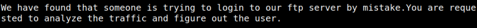
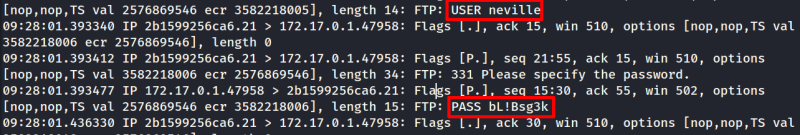

5.2 Tcpdump
As you saw in previous point there's file called “note.txt”.
1. On the “reverse shell” show the file content.
$cat note.txt
Output:

2 Analyze the traffic with “tcpdump”.
Output:

You'll find an user's credentials.
User: neville
Password: bL!Bsg3k